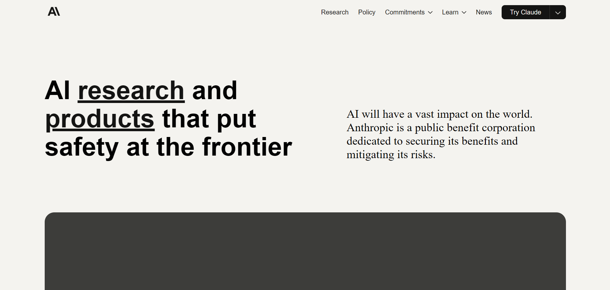

mhmd.dev
A junior developer focused on writing clean, maintainable code, and creating good digital experiences that make a positive impact for users.
A frontend clone of Dataset.ET - An open infrastructure of Ethiopian language AI

A frontend clone of Anthropic.com - an artificial intelligence safety and research company